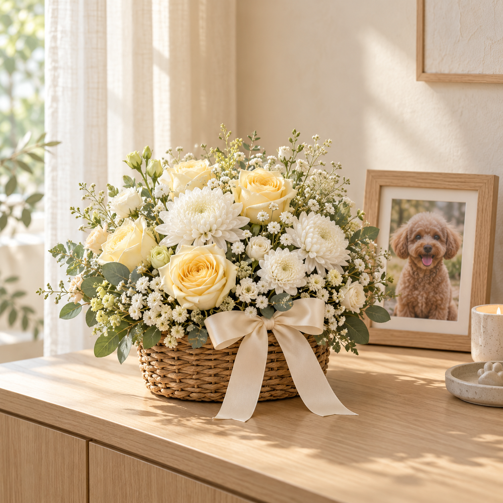

깨끗한 화이트 톤에 담은 고요한 인사
45,000원미니화환
가족을 떠나보낸 소중한 사람에게
함께 기억하고 있다는 마음을 보내주세요.
작은 미니화환이 당신의 마음을 대신 전합니다.

작은 공간에도 함께하는부담 없는 미니 사이즈
말로 다 전하지 못한 마음나만의 추모 메시지
마지막 인사를 나누는 곳으로장례식장 배송 정보 입력
그 아이를 닮은 꽃으로, 따뜻한 인사를 건네세요.
깨끗한 화이트 톤에 담은 고요한 인사
함께한 날처럼 다정한 핑크빛 마음
좋아하던 햇볕처럼 따스한 꽃 한 바구니
서비스 시안입니다. 상품 이미지는 AI로 생성한 연출 예시이며, 가격도 예시입니다. 실제 구성·배송비·배송 가능 여부는 운영 준비 후 확정됩니다.
“무슨 말을 해야 할까” 망설여지는 순간이 있어요.
같이 슬퍼하고, 함께 기억하고 있다는 마음만으로도
누군가에게는 조용한 힘이 될 수 있으니까요.
마음 한 송이는 소중한 가족을 떠나보낸 이의 곁에
당신의 따뜻한 마음이 닿을 수 있도록 준비합니다.
멀리 있어도, 위로는 가까이 닿을 수 있어요.
전하고 싶은 마음과 어울리는
미니화환을 선택해 주세요.
장례식장 정보와 함께
짧은 추모 메시지를 남겨주세요.
장례 일정과 수령 가능 여부를 확인한 뒤
꽃과 메시지를 전달하는 서비스입니다.
장례 일정이 짧을 수 있어요. 주문 전 장례식장의 화환 반입 가능 여부와 수령 시간을 확인해 주세요.
천천히 살펴보셔도 괜찮아요.
수령인과 장례식장, 장례 일정 정보가 필요합니다. 지인이 공유한 장례 안내를 참고하고, 불확실한 정보는 주문 전에 확인해 주세요.
장례식장별 반입 규정과 배송 지역에 따라 달라집니다. 실제 운영 시에는 접수 전에 배송 가능 여부를 확인하도록 준비할 예정입니다.
“함께한 모든 순간을 오래 기억할게요.”, “작은 발자국이 남긴 큰 사랑을 기억합니다.”처럼 짧고 진심 어린 말이면 충분해요. 주문 화면에서 예시를 선택할 수 있습니다.
현재는 주문 과정을 체험하는 서비스 시안입니다. 결제, 실제 주문 접수와 배송은 진행되지 않으며 입력한 정보는 서버로 전송하지 않습니다.